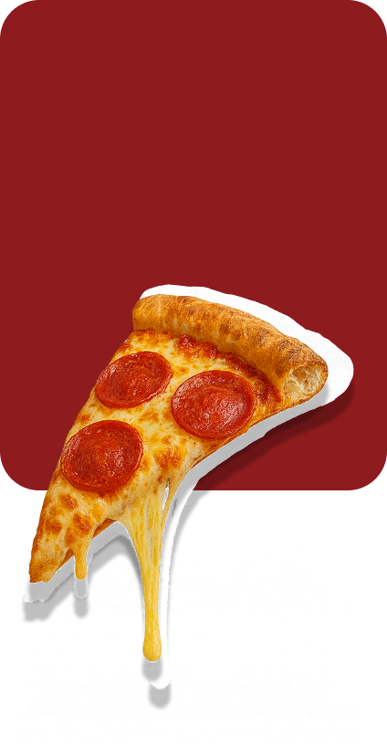
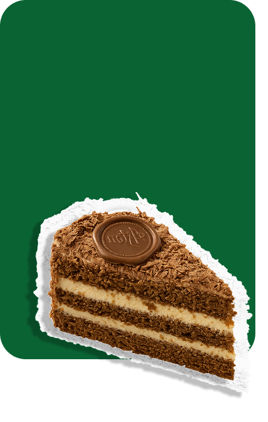

NUESTRA HISTORIA
COMO SURGE
Este proyecto surge como respuesta a esa necesidad un espacio digital donde la memoria de cada festival quede registrada y disponible para todos. Así, buscamos que la tradición gastronómica no solo se mantenga viva, sino que también llegue a más personas dentro y fuera de la región.

IMPORTANCIA
Desde sus inicios, los festivales gastronómicos han sido más que un encuentro de sabores: son el reflejo de nuestra identidad, de los saberes ancestrales y de la unión de nuestra comunidad. Sin embargo, la falta de un lugar que centralice toda la información hacía que muchos de estos recuerdos se perdieran

CENTRALIZACION
Conscientes de la importancia de la tradición gastronómica de nuestro municipio, decidimos crear una plataforma digital que conserve la memoria de los festivales y la ponga al alcance de todos. Lo que antes estaba disperso en afiches, notas o recuerdos aislados, ahora se integra en un solo espacio accesible y actualizado.